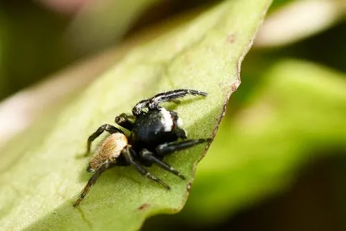

蛛形动物 · 动物界
白斑猎蛛 Evarcha albaria

常见的跳蛛，雄性头胸部有白色斑纹，不结网，靠敏锐视力四处游走捕食蚊蝇和小虫，是农田和庭院中的益虫。
- 分类
- 门节肢动物门纲蛛形纲目蜘蛛目科跳蛛科属猎蛛属
- 栖息环境
- 草丛、农田、灌丛、墙面和栏杆等阳光充足处
- 地理分布
- 中国、日本和朝鲜半岛
- 保护级别
- IUCN 暂无评估；中国未列入国家重点保护名录
物种志
白斑猎蛛雌蛛体长 6–8 mm，雄蛛 5–6 mm，头胸部黑褐色，雄蛛背面有醒目的白色斑纹，腹部有浅色横带；八只单眼以前中眼最大，视力敏锐，足短而粗壮，善于跳跃。
它分布在中国、日本和朝鲜半岛，栖息于草丛、农田、灌丛、墙面和栏杆，不结捕猎网，而是四处游走、跳跃扑食苍蝇、蚊子、叶蝉和小蛾。雄蛛求偶时会举起前足摆动，向雌蛛展示斑纹。雌蛛在缝隙或卷叶中产卵并守护卵囊，幼蛛孵化后独立生活。白斑猎蛛喜欢在阳光充足的枝头活动，跳跃前会先固定一根安全丝，受惊时迅速跳开。它不主动咬人，无毒害，是农田和庭院中的天敌昆虫；目前 IUCN 暂无评估，中国未列入国家重点保护名录。
形态与习性
- 食性苍蝇、蚊子、叶蝉和小蛾等
- 体长雌蛛 6–8 mm，雄蛛 5–6 mm
- 识别雄蛛头胸部有白色斑纹
- 习性昼行性，靠视觉游走捕猎
- 繁殖雌蛛守护卵囊直到幼蛛孵化
- 毒性无毒害，不主动咬人
趣味知识
- 白斑猎蛛不结网，靠一双大眼睛锁定猎物后突然跳跃。
- 雄蛛求偶时会举起前足摆动，向雌蛛展示白色斑纹。
- 它跳跃前会先吐一根丝固定自己，相当于系上安全绳。